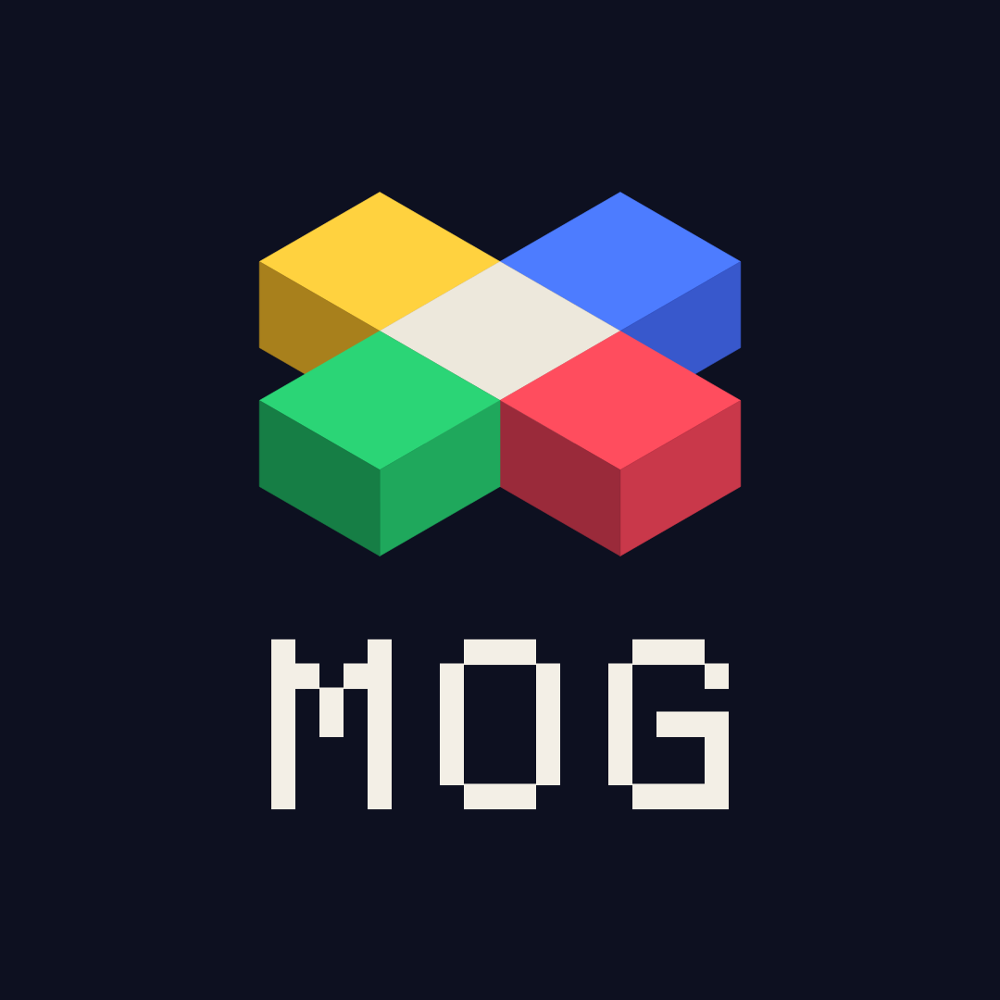

Uma casa para traduções de fãs
O Matrix Old Games reúne traduções para português de jogos clássicos, de qualquer console. O projeto começou com Shenmue, no Dreamcast, e a ideia é crescer com novos jogos e novos tradutores.
O foco é fidelidade: o texto muda de idioma, mas a tela continua com a cara do jogo original. Fontes, cores, contornos e sombras são recriados um a um.

MatrixHK
Responsável pelas traduções atuais. Recria há anos capas, manuais e caixas de jogos, e leva esse cuidado com tipografia e arte para dentro das telas traduzidas. Testa cada versão em console real e em emulador antes de lançar.
Quer ajudar?
- Testadores: jogam as versões antes do lançamento e reportam erros
- Revisores: leem os textos e ajudam com naturalidade e ortografia
- Tradutores e romhackers: trazem novos jogos e consoles para o projeto
Fale pelo e-mail ou pelo Instagram.
Aviso legal
Este é um projeto de fãs, sem fins lucrativos e sem afiliação com desenvolvedoras ou distribuidoras. Todas as marcas e jogos pertencem aos seus donos. O site distribui apenas patches de tradução, que não funcionam sem uma cópia do jogo original. Se você representa um detentor de direitos e tem alguma questão, fale com a gente pelo e-mail acima.